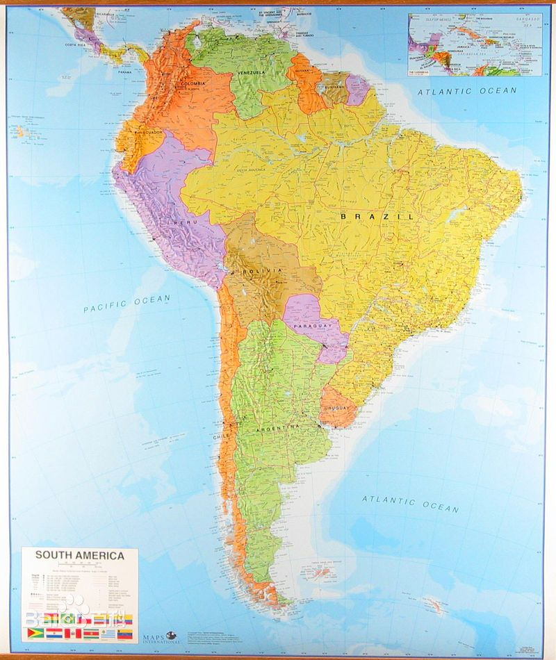

欧洲
欧洲的全称是“欧罗巴洲”，意译则为“西方日落之地”。关于其名的由来，有一些传说。
在希腊神话中，德米特(Demeter)是专管农事活动的女神，她保佑人间五谷丰登、人畜两旺 。
在有关这位女神的画像中，人们总是把她画成坐在公牛背上。这位女神的另一个名字叫欧罗
巴，人们出于对女神的敬意，就把欧罗巴作为大洲的名字。此外，还有一个广泛流传的传 说：
“万神之王”宙斯看中了腓尼基国王的漂亮女儿欧罗巴，想娶她作为妻子，但又怕她不 同意。
一天，欧罗巴在一群姑娘的陪伴下在大海边游玩。宙斯认为机会难得，连忙变成一匹 雄健、
温顺的公牛，混入腓尼基国王的牛群中。变成公牛的宙斯来到欧罗巴的身边蹲下来， 脉脉
含情地望着她。欧罗巴看到这匹可爱的公牛伏在自己身边，便身不由主地跨上牛背。宙 斯
一看欧罗巴中计，马上起立前行，躲开了人群，然后腾空而起，接着又跳入海中破浪前进 ，
带欧罗巴来到远方的一块陆地共同生活。这块陆地以后也就以这位美丽的公主的名字命名 ，
叫做欧罗巴了。
七大洲亚洲
在世界七大洲中亚洲面积最大、人口最多，它的名字也最为古老。亚洲是“亚细亚洲”的
简称，意思是“东方日出之地”。相传亚细亚的名字是由古代腓尼基人所起。公元前2000年
中期，腓尼基人在地中海东岸(今叙利亚一带)兴起，建立起强大的腓尼基王国。他们具有精
湛的航海技术，活跃于整个地中海，甚至能穿越直布罗陀海峡驶入茫茫的大洋中。他们发展
了自己的文化，创造了腓尼基字母，为世界许多民族的文字发展做出了贡献。频繁的海上活
动 ，要求腓尼基人必须确定方位。所以，他们把地中海以东的陆地一律称之为“Asu”，英语
“Asia”是由腓尼基语“Asu”演化而来，音译为“亚细亚洲”。 到了公元4世纪初，人们便把乌
拉尔山脉等作为两洲的界限，分界线以东南的地区称为亚细亚洲，简称亚洲；以西北的地区
则称为欧罗巴洲，简称欧洲。
七大洲北美洲

北美洲和南美洲合称美洲，美洲是“亚美利加洲”的简称。 美洲的得名，普遍的说法是
为纪念意大利佛罗伦萨的一位名叫亚美利哥·维斯普奇的著名航海家。尽管哥伦布早在1492
年就已发现了美洲，然而他却始终认为这块大陆是亚洲的一部分 。7年之后的1499年，亚
美利哥随同葡萄牙人奥赫达率领的船从海上驶往印度，他们沿着哥伦布所走过的航路向前航
行，克服重重困难终于到达美洲大陆。亚美利哥经过对南美洲东北部沿岸详细考察，确信这
块大陆是世界上另一个大洲，并编制了最新地图。1507年，他的《海上旅行故事集》一书
问世，引起了全世界的轰动。在这本书中，引人入胜的叙述了发现新大陆的经过，并对大陆
进行了绘声绘色的描述和渲染。亚美利哥向世界宣布了新大陆的概念，一下子冲垮了中世纪
西方地理学的绝对权威普多列米制定的地球结构体系。于是，法国几个学者便修改和补充了
普多列米的名著《宇宙学》，并以亚美利哥的名字为新大陆命名，以纪念他对人类认识世界
所作的杰出贡献。新《宇宙学》一书出版后，根据书中的材料，在地图上也加上了新大陆
——亚美利哥洲。后来，仿照其他大洲的名称词尾形式，“亚美利哥” 又改成“亚美利加”。起
初，这一名字仅指南美洲，到1541年麦卡托的地图上，北美洲也算美洲的一部分了。
南美洲

名称的由来：拉丁美洲是美国以南，包括墨西哥、中美洲、西印度群岛和南美洲地区的通称。
从15世纪末，这个地区的绝大部分国家先后沦为西班牙和葡萄牙的殖民地，大批移民蜂拥
而入。19世纪以后，这些国家才陆续获得独立。由于殖民统治长达300年之久，因此它们
深受西班牙和葡萄牙的社会制度、风俗习惯、 宗教信仰和文化传统的影响，而且当地的印
第安语逐渐被属于拉丁语系的西班牙语和葡萄牙语所取代，这两种语言成为该地区许多国家
的国语，所以人们便把这个地区称为“拉丁美洲”。]（注：美洲约有三种分类方法：①北美洲
-南美洲②北美地区-拉丁美洲③北美地区-中美洲-南美洲）
七大洲非洲
非洲是“阿非利加洲”的简称。 对于阿非利加一词的由来。流传着不少有趣的
传说，一种传说是，古时也门有位名叫Africus的酋长，于公元前2000年侵入
北非，在那里建立了一座名叫Afrikyah的城市，后来人们便 把这大片地方叫做
阿非利加。另一种传说是，“阿非利加”是居住在北非的柏柏尔人崇信的一位女神
的名字。这位女神是位守护神，据说早在公元前1世纪，柏柏尔人曾在一座庙里
发现了这位女神的塑像，她是个身披象皮的年轻女子。此后，人们便以女神的名
字“阿非利加”作为非洲大陆的名称。还有一种传说，侵入迦太基地区（今突尼斯）
的罗马征服者西皮翁的别名叫“西皮翁·阿非利干”，为了纪念这位征服者，罗马统
治者就把这片地区叫做“阿非利干”。以后，罗马人又不断扩张，建立了新阿非利
加省。当时，这个名称只限于非洲大陆的北部地区。到了公元2世纪，罗马帝国
的疆域扩大到从直布罗陀海峡到埃及的整个东北部的广大地区，人们把居住在这
里的罗马人或是本地人统统叫做阿非利干(Africain)，意即阿非利加人，这片地方
也被叫做阿非利加。之后，该名称又泛指非洲大陆。
七大洲大洋洲
大洋洲，意即“大洋中的陆地”。一般指太平洋的多数岛屿，狭义上指澳大利亚、
新西兰、太平洋东部的波利尼西亚群岛、中部的密克罗尼西亚群岛和西部的美拉
尼西亚群岛。 过去 ，大洋洲也曾被称为“澳大利亚洲”，简称澳洲，因为澳大利
亚的面积占了大洋洲陆地面积的85% 。而大洋洲的名称最早出现于1812年前后，
由丹麦地理学家马尔特布龙命名。
南极洲
南极洲，因该大陆处在地球的最南端南极点的周围，由此而得名。其英文名为
Antarctica，源出希腊文anti（相反）加上Arctic（北极），意为北极的对面，即
南极。 南极洲在1738~1739年由法国人布维发现，他航海时发现了南极大陆附
近的一个岛（今布维岛）。英国人库克曾于1772~1775年到达过南极大陆周围
许多岛屿。但是，一般认为南极大陆是19世纪被发现的。据说，美国人于1820
年首次看见南极大陆。